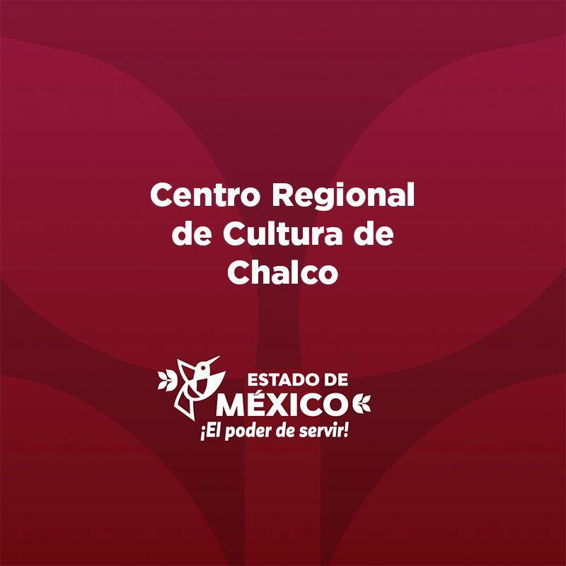
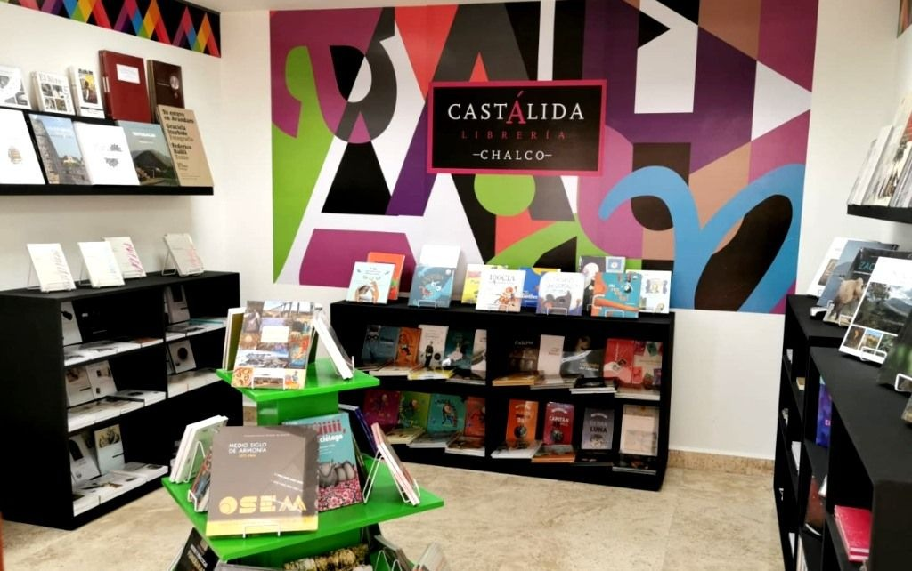
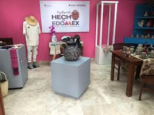
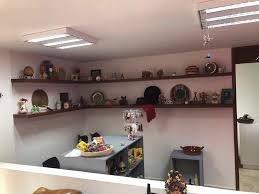
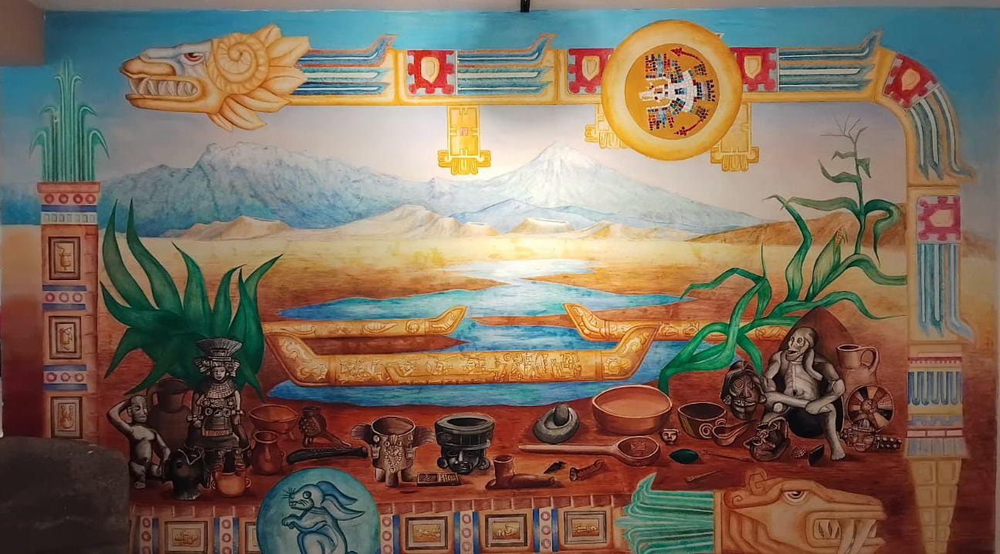
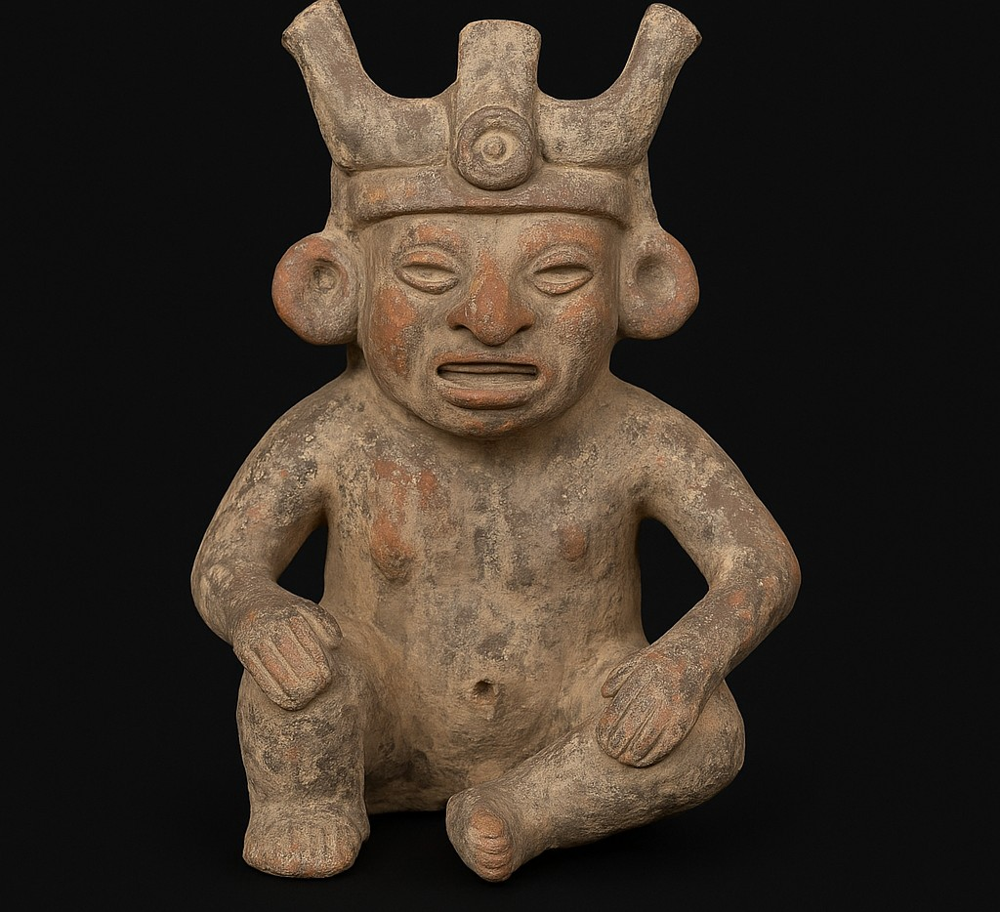
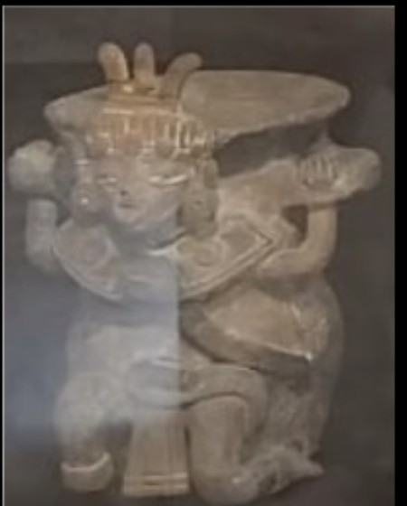
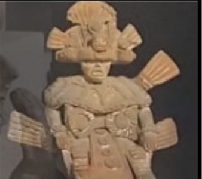
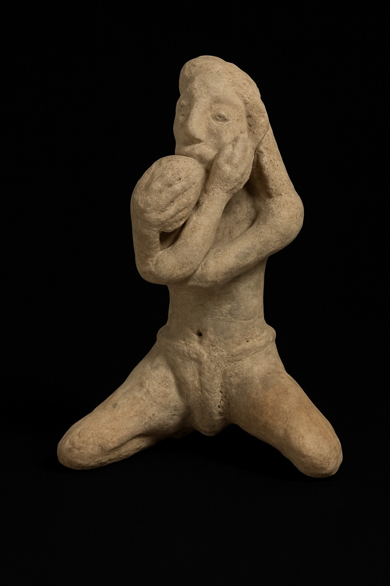
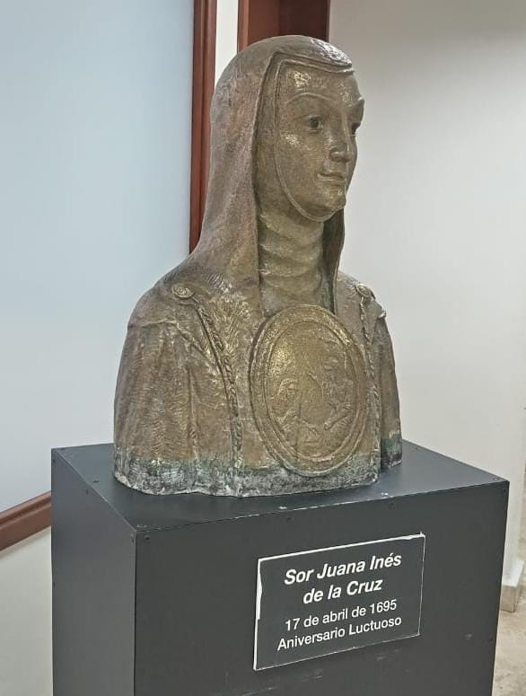

El Centro Regional de Cultura Chimalpahín es un espacio dedicado a la promoción de la cultura y las artes en nuestra región.
Cuenta con un museo, la Librería Castálida y tienda CASART, en la que destaca el arte popular de manos artesanas y artesanos mexiquenses. Una sala de lectura, sala de exposiciones permanente en donde se encuentra la muestra “Entintando magueyes, Rostros e historias de John McGhee”, y una sala de exposiciones temporales.



El Centro Regional de Cultura “Chimalpahín” es un recinto cultural que ha fomentado la cultura y las artes en la zona de Los Volcanes y que además lleva el nombre de uno de los historiadores y cronistas náhuatl con más reconocimiento.
Domingo Francisco de San Antón Muñón Chimalpahín Cuauhtlehuanitzin nació en Amecameca, descendiente de los señores de Chalco-Amecameca, el 27 de mayo de 1579, dentro de sus obras se reconoce un libro escrito a mano en su propia lengua, donde narra la vida de los habitantes de la región llamado “Relaciones Originales de Chalco-Amaquemecan”, que abarca desde el año 670 hasta 1612 y un diario de 1589 a 1615.
De ahí radica la importancia de reconocer el legado de un mexiquense que enaltece las raíces e historia de las comunidades indígenas a través de la memoria escrita, que además se plasma en el Códice Chimalpahín, redactado en el siglo XVII.
El Centro Regional de Cultura “Chimalpahín” fue inaugurado en 1978, por el entonces Gobernador Jorge Jiménez Cantú y el Director de Patrimonio Cultural, Mario Colín Sánchez.
Dentro de sus instalaciones hay un museo con varias piezas arqueológicas provenientes de la región, sahumerios, ollas, figuras y cráneos, también salones de talleres, área de exposiciones, jardines, ventanales y fue sede de la Biblioteca “Juan Díaz Covarrubias” hasta el año 2014, y del Archivo Histórico Municipal, hasta el año de 2002.
Dos murales, “Una visión al mundo Chalca” y “Chalco, análisis, producción y desarrollo cultural”, realizados por el artista Evaristo Enrique Miranda Ladrón de Guevara, enmarcan los volcanes Popocatépetl e Iztaccíhuatl, la herencia prehispánica, los cultivos de maguey y maíz, un lago, utensilios de cocina, figurillas de piedra y la representación de dioses prehispánicos.
rehispánica, los cultivos de maguey y maíz, un lago, utensilios de cocina, figurillas de piedra y la representación de dioses prehispánicos. Es un centro que atiende con programas de desarrollo cultural a los municipios de Valle de Chalco, Ixtapaluca, Cocotitlán, Temamatla, Tenango del Aire, Juchitepec y Tlalmanalco.
Aunado a ello, las y los mexiquenses tienen un espacio de expresión y desarrollo de talento artístico con talleres para todo público.


Figura antropomorfa elaborada en cerámica, representando a un personaje con orejeras prominentes y un tocado elaborado, elementos que indican su posible importancia dentro del ámbito ceremonial o religioso. Las orejeras eran símbolos de alto rango, usados frecuentemente por sacerdotes, nobles o representaciones divinas. El tocado, modelado con detalle, podría aludir a una deidad o figura ritual, lo cual sugiere que esta pieza fue utilizada en contextos religiosos, posiblemente como ofrenda, en altares domésticos o en rituales funerarios.

Se trata de un incensario elaborado en cerámica, utilizado en rituales religiosos para la quema de copal u otras resinas aromáticas. Este tipo de objetos eran esenciales en las prácticas espirituales mesoamericanas, ya que el humo era considerado un medio para comunicar con los dioses o con el mundo espiritual.

Figura antropomorfa de cerámica representada en posición sedente (sentada), que porta un adorno cefálico o tocado elaborado, símbolo común de estatus, poder o función ritual dentro del pensamiento mesoamericano. El tocado puede hacer referencia a una deidad, sacerdote o personaje de alto rango dentro de la estructura social o religiosa. La expresión facial, el porte solemne y el detalle en la cabeza sugieren un uso ceremonial o devocional. Este tipo de figuras era comúnmente colocado en altares domésticos, utilizado como ofrenda o como representación simbólica de fuerzas sobrenaturales o antepasados.

Figura antropomorfa en cerámica, representada en posición hincada o arrodillada, postura frecuentemente asociada con actos de veneración, súplica o entrega ritual en las culturas mesoamericanas. El personaje presenta detalles estilizados en el rostro y el cuerpo, lo que podría indicar su papel como ofrenda o representación simbólica. La posición corporal sugiere un rol devocional, posiblemente ligada a rituales religiosos o funerarios. Este tipo de figuras eran comunes en altares domésticos o contextos ceremoniales, como parte de prácticas relacionadas con la fertilidad, la lluvia o el culto a los ancestros.

Esta escultura representa el torso de Sor Juana Inés de la Cruz, figura emblemática del siglo XVII y una de las más importantes exponentes de la literatura novohispana. Reconocida como la Décima Musa, Sor Juana fue poeta, filósofa y defensora del saber femenino en un contexto dominado por las restricciones religiosas y sociales de su época.
El torso, trabajado con delicadeza, destaca elementos característicos de su imagen tradicional: el hábito de la orden de San Jerónimo y posiblemente el escudo de monja al pecho, símbolo distintivo que solía portar. Esta pieza honra su legado intelectual y su vínculo con la región, ya que Sor Juana nació en San Miguel Nepantla, una localidad perteneciente al actual municipio de Tepetlixpa, muy cercana a Chalco. Su presencia en el Centro Regional de Cultura de Chalco refuerza el papel de la región como foco de identidad, memoria y patrimonio histórico-literario del Estado de México.
| Taller | Horarios | Costos |
|---|---|---|
| Danza Contemporánea - Infantil | Lunes y Miércoles de 3:00 - 5:00 pm | $125 Mensual |
| Danza Contemporánea - Juvenil | Lunes y Miércoles de 5:00 - 7:00 pm | $125 Mensual |
| Danza Clásica - Infantil | Martes y Jueves de 4:00 - 5:00 pm | $125 Mensual |
| Danza Clásica - Juvenil | Martes y Jueves de 5:00 - 7:00 pm | $125 Mensual |
| Música - Guitarra - Principiante | Martes y Jueves de 4:00 - 5:30 pm | $125 Mensual |
| Música - Guitarra - Intermedios | Martes y Jueves de 5:30 - 7:30 pm | $125 Mensual |
| Dibujo y Pintura | Infantil - Lunes y Miércoles de 4:00 - 6:30 pm Juvenil - Martes de 4:00 - 6:30 pm | $125 Mensual |
| Teatro | Lunes y Miércoles de 4:00 - 7:30 pm | $125 Mensual |
| Danza Regional - Infantil | Martes y Jueves de 5:00 - 6:00 pm | $125 Mensual |
| Danza Regional - Juvenil | Martes y Jueves de 6:00 - 7:00 pm | $125 Mensual |
| Acuarela - Niños y Adultos | Sábados de 10:00 - 11:00 am | $125 Mensual |
| Pintura en Cerámica | Lunes y Viernes 3:00 - 7:00 pm | Según la pieza que desee pintar |
| Violín | Martes y Jueves de 7:00 - 8:00 pm | $250 Mensual |
| Robótica | Miércoles de 4:00 - 7:00 pm | $650 Mensual |
| Mimbre | Martes de 4:00 - 6:00 pm | $50 por clase más material |
| Inglés | Domingo de 10:00am - 12:00 pm | $125 Mensual |
| Canto | Lunes y Miércoles de 1:00 - 3:00 pm | $100 por clase |
Email: chalcoimc@yahoo.com.mx
Tel: 55 5975 3253
Dirección: Av. Cuauhtémoc Pte. 2, Chalco Centro
Enviar Mensaje Facebook